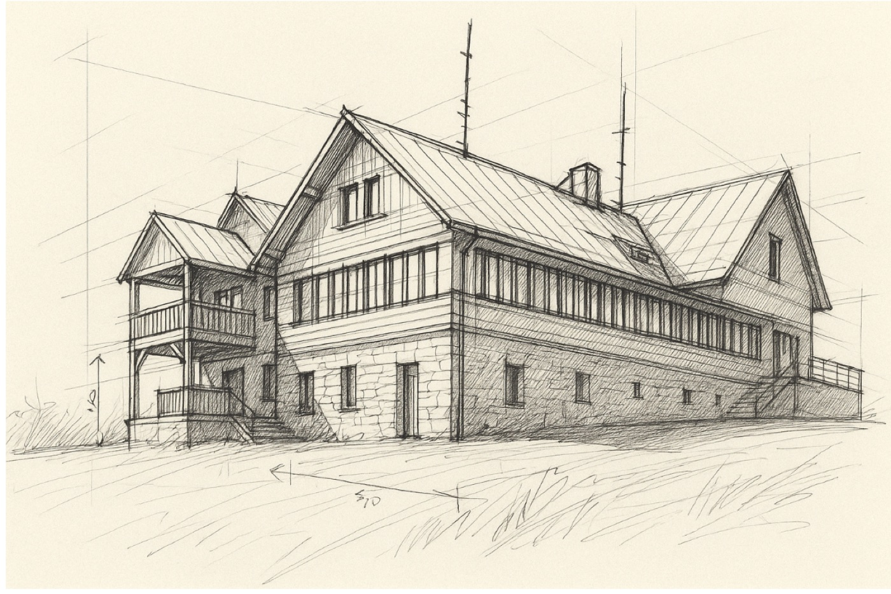

Vize · Javorový
Rok práce. Stovky hlasů. Jeden kopec. Z pověření zastupitelstva jsme připravili podklad pro rozhodnutí o budoucnosti chaty i celého areálu — a tady je, co jsme zjistili.

Javorový při pohledu od Gutů.

Ilustrační skica — chata Javorový, nejstarší chata v této části Beskyd (1895).
Jak vize vznikala
z vás považuje Javorový za jednu z hlavních dominant Třince
z vás vyrazí na kopec několikrát ročně
občanů se zapojilo do dotazníku o budoucnosti Javorového
Chata od roku 1895
Chata na Javorovém stojí od roku 1895 — postavil ji turistický spolek Beskidenverein a je nejstarší chatou v této části Beskyd. Přečkala více než sto dvacet zim, hostila generace turistů z Třince i okolí a dnes patří městu. Právě k její původní podobě z přelomu 19. a 20. století se chceme rekonstrukcí vrátit.

Chata na pohlednici z roku 1910, ještě před přístavbou verandy. Zdroj: sbírka Stanislava Kroczka, volné dílo.
Co říká průzkum · chata
Občerstvení na chatě si dává 88 % z vás — jídlo ale hodnotíte známkou 2,1 z 5 a ubytování 3 z 5. Proto chceme víc:
Co říká průzkum · celý kopec
Klíčové zjištění
Pro 65 % z vás je ochrana přírody na Javorovém důležitá a 68 % nesouhlasí se zpřístupněním vrcholu pro auta. Většina si přeje, aby návštěvnost zásadně nerostla — kvůli přírodě i unikátnímu charakteru místa. Chceme, aby kopec sloužil líp. Nám všem.
Naše vize
Mluví za to i čísla: za turistikou na kopec chodí 91 % z vás, na lyžích jezdí 7 % — a největší potenciál vidíte v pěší turistice (100 %) a paraglidingu (88 %). Klimatické změny rozhodly — z Javorového už nebude lyžařský areál. To ale otevírá nové možnosti: sport, kulturu a komunity po celý rok. Areál zůstává v rukou města a chata se vrátí k podobě, jakou měla v roce 1895.
Naše doporučení a zadání
Nechceme z Javorového nové Pustevny. Chceme, aby město mělo chatu i areál dál ve svých rukou — a investovalo do nich.
Rekonstrukce chaty do původní podoby z přelomu 19. a 20. století — s novou terasou směrem na jih.
Oddělené místo pro konání akcí — letní scéna a menší akce na místě zbouraných chat.
Sociální zázemí a WC otevřené 24/7 — nezávislé na hlavní chatě.
Zázemí pro spolky a kluby, které na kopci žijí — sklad, klubovna, přenocování.
Nové atrakce pro rodinné výlety — pro děti od 0 do 15 let.
Celoroční zázemí pro turisty a sportovce — kopec slouží v létě i v zimě.
Návštěvnost nemá rapidně růst — zachováme charakter místa.
Kladný vztah k přírodě — energie, materiály, propojení s okolím.
Respekt k územnímu plánu a technická řešení připravená na různé provozovatele.
Odpovědné nakládání s odpady — dnes často končí v lese.
Výběrové řízení na nového nájemce až po rekonstrukci — s novými podmínkami nájmu.

Vizualizace: KANIA a.s. — studie proveditelnosti, květen 2024, varianta 2. Ukazuje záměr, ne finální podobu.
Studie proveditelnosti · KANIA, 2024
Nezačínáme na zelené louce — studie proveditelnosti spočítala tři varianty, jak s chatou naložit. Ceny jsou včetně DPH.
Okna a dveře, elektroinstalace, nová čistírna odpadních vod, rekonstrukce střechy a podhledů. Chata přežije — ale nic víc.
Vše z údržby + jednotná fasáda a nová dřevěná terasa pro 70 lidí inspirovaná tou historickou. Této variantě odpovídá vizualizace výše.
Nová budova na kamenném základu — restaurace s terasou pro 100 lidí, ubytování pro 40 osob, fotovoltaika na jižní střeše.
Jak dál
Návrh nové chaty jde získat třemi cestami. Porovnali jsme je a doporučujeme zakázku třem architektům — je rychlá, dostupná a jako jediná spojuje výběr z více návrhů se zapojením veřejnosti.
20+ návrhů z celé republiky. Transparentní, ale drahá, administrativně náročná a pomalá.
Místní architekti, kteří Beskydy znají a mají k nim vztah. Tři návrhy a výběr se zapojením veřejnosti.
Nejlevnější cesta — ale jediný návrh, bez výběru a bez hlasu veřejnosti.